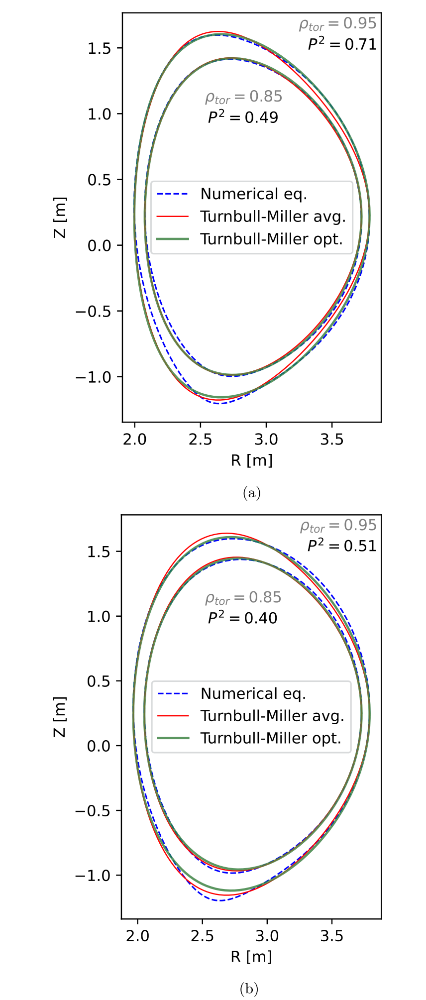
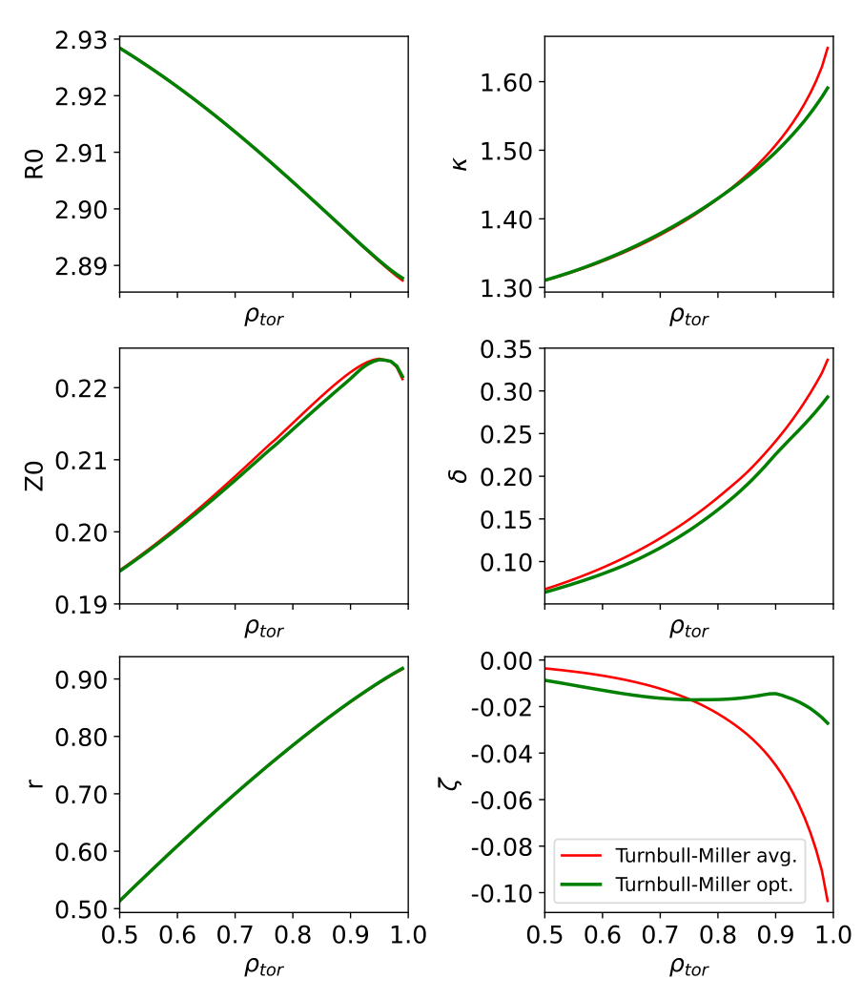
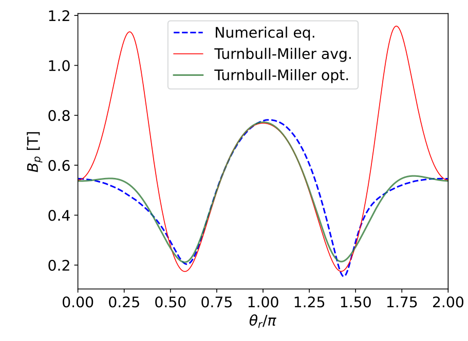
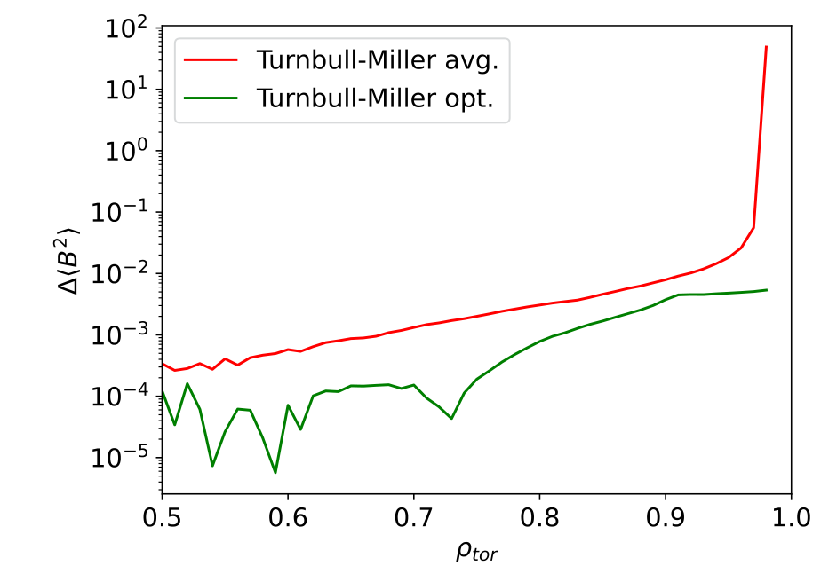
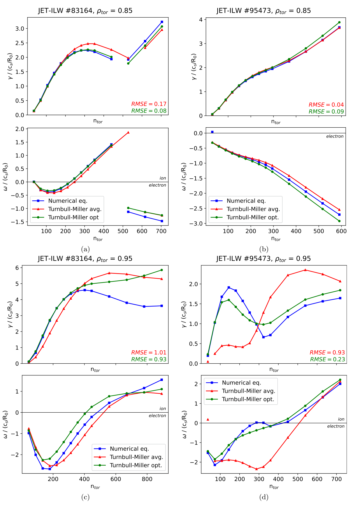
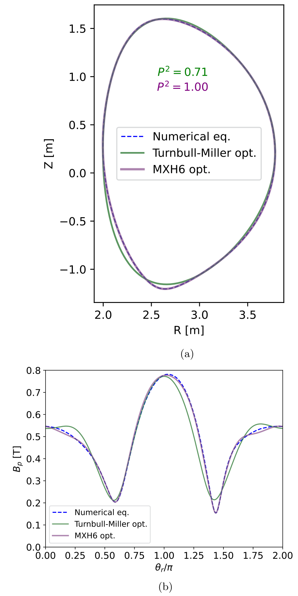
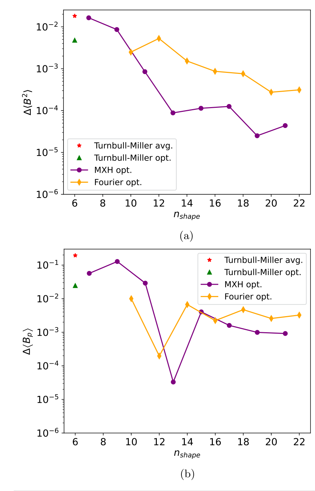
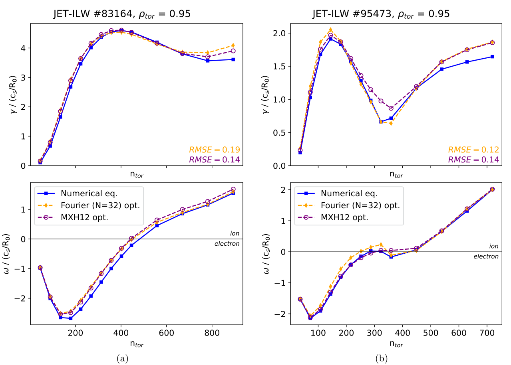
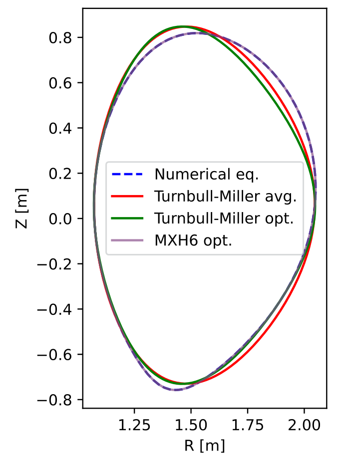
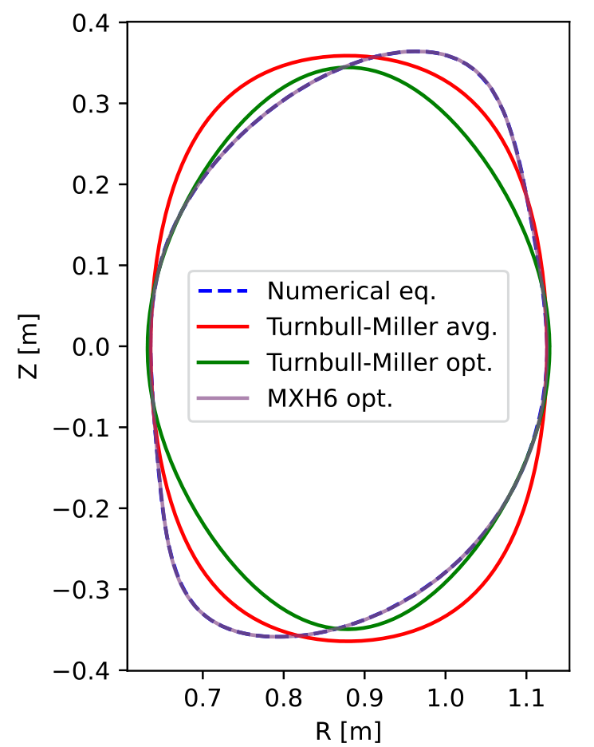

READING CLUB · 论文精读 · 2026-10-05
约束优化磁面拟合：
从轮廓误差到回旋动理学谱
Improved flux-surface parameterization through constrained nonlinear optimization
用带边界的鲁棒非线性最小二乘确定已有磁面表示的参数，再用相邻磁面导数与 GENE 线性谱验证：轮廓更准通常有帮助，但不能保证物理谱更准。
已覆盖上传 PDF 全部正文与附录、10 幅原图、1 张原表。公式离线预渲染；原图可点击查看完整分辨率。未做原始数值复现；按要求未进行浏览器检验。
1. 研究问题与这篇论文真正贡献了什么
托卡马克局部输运模型需要把数值平衡压缩成少量可调几何参数。传统做法根据磁面上下、内外侧的极值求拉长比、三角度等，再对不同象限得到的值取平均。离散网格使极值定位需要插值；上下不对称又使一个单一参数无法同时匹配多个部位。因此，“从几何定义算出的平均参数”并不必然等于“在这个参数化族里拟合整个轮廓最好的参数”。这个差别在强塑形的外半径尤其明显。［§I，PDF 第 2–3 页］
作者的贡献是参数识别流程：以数值 Grad–Shafranov 平衡的磁面为参照，把有限维形状参数交给带边界的鲁棒非线性最小二乘求解；从相邻磁面的拟合参数计算径向导数，再把局部平衡送入 GENE 检查增长率和频率谱。流程先用于 Turnbull–Miller，再用于 GENE 的一般 Fourier 和 MXH。论文还公开了 MEGPy。它使用已有参数化与已有优化器，不是发明新的磁面函数族，也不是直接优化等离子体设计。［§II–VI，PDF 第 3–10 页］
最有说服力的证据不是轮廓曲线更贴近，而是 #95473 外侧磁面在线性谱上的明显改善；最有价值的限制则是 #95473 内侧算例反而退步，以及附录 A 中“更准的极向磁场不一定带来更准的物理谱”。因此，正确的阅读结论应是优化可减小既有几何表示的拟合损失，并在部分强塑形算例中改善物理预测；轮廓准确度不能代替物理验证。［图 5、8；附录 A，PDF 第 7–12 页］
| 层次 | 论文比较的对象 | 可回答的问题 | 不能据此回答的问题 |
|---|---|---|---|
| 形状表示 | Turnbull–Miller、Fourier、MXH | 有限参数能描述哪些塑形、怎样随阶数收敛 | 优化器能否消除表示族本身的对称性限制 |
| 参数估计 | 几何平均值与优化值 | 同一个函数族里的轮廓拟合能否改善 | 是否找到唯一或全局最优解 |
| 局部平衡 | 形状、径向导数、磁场 | 压缩几何能否保持所需度量与磁场 | 单个磁场平均值是否足以保证完整几何正确 |
| 物理验证 | GENE 数值几何与参数化几何 | 最快增长模的线性谱是否接近 | 非线性热流、输运积分预测或 L–H 阈值是否改善 |
与资料库的 Arbon–Candy–Belli 2021 MXH 报告连读时，可以把两篇的分工理解为：2021 年论文主要讨论角度谐波表示为何紧凑；本篇讨论如何从数值平衡确定拟合参数，并追踪压缩误差进入回旋动理学计算的后果。这个联系来自本篇对参考文献 8 的使用，不把前一篇的验证结果当成本篇的新结果。
2. 几何、磁场与径向导数：完整局部平衡需要什么
2.1 不要把磁面角度与几何极角混在一起
本篇研究轴对称托卡马克。磁面是极向磁通 的等值面；截面轮廓位于圆柱坐标 平面。 是参数化采用的几何小半径， 是归一化环向磁通径向坐标，二者不能直接互换。参数化角度 和参照轮廓的极角 也通常不同。图上横轴为 时，外侧位置对应 与 ，内侧约对应 。［§II–III、图 3，PDF 第 3–6 页］
2.2 Turnbull–Miller 的六个形状参数
原式（1）为：
这里 的单位为米；、、 分别是拉长比、三角度和方形度，均无量纲。。由于谐波相位固定，轮廓关于自身水平中线 上下对称；移动 能改变位置，却不能表示倾斜或一般的上下不对称。
这是原式（2）及其后的通用边界，实际设备可以进一步收紧。边界保证基本参数范围，但并不单独保证相邻磁面嵌套、Jacobian 不退化或数值实现远离端点奇异性。［§II，PDF 第 3 页；后一判断为读者推断］
2.3 为什么只拟合一条轮廓还不够
原式（3）把极向磁场写成几何梯度与磁通导数的乘积：
为环向角。原式按论文磁通与坐标约定书写；实际实现应核对磁通方向和正定磁场大小的约定。 包含轮廓的径向与极向导数。因此两条看起来相近的曲线，可能产生很不相同的度量系数与 。原式（4）为：
原式（5）–（11）定义了其中的角度与系数：
注意 是 的归一化径向变化，不是简单的三角度对数梯度； 也没有除以 。由此需要原式（12）的五个形状导数参数：
这些量在此约定下均无量纲；通用边界为各分量从 到 。 允许 有一定上下不对称，即使截面轮廓本身对称。环向磁场由原式（13）给出：
为极向电流函数。对局部平衡还需安全因子 、磁剪切 、归一化压力梯度 等输入。六个形状参数并不等于一个完整的回旋动理学几何文件。［§I–II，PDF 第 2–4 页］
3. 从数值平衡到拟合参数：优化流程与附录 A
3.1 输入 → 轮廓 → 鲁棒拟合 → 导数 → 物理接口
- 输入数值平衡。从矩形网格上的 出发，指定目标磁通；在磁轴周围由 LCFS 确定的包围盒内追踪闭合等值线，得到参照点 。本方法不是重新求解 Grad–Shafranov 方程。
- 构造 Turnbull–Miller 初猜。按 Miller、Luce 的几何定义求平均解析参数。离散极值用少量极向点的五阶多项式求驻点近似。优化避免把这些近似值当作最终答案，但初猜仍使用这些几何测量；摘要中“无需近似几何测量”应在这个意义下理解。
- 在边界内拟合。使用 SciPy 的 trust region reflective 求解器，采用
soft_l1损失。求解目标是整个轮廓的坐标残差，而不是只保证几个极值吻合。 - 每次迭代重新对应角度。Turnbull–Miller 在两个坐标里都改变相位，不能直接复用参照极角网格；按当前参数化的有效几何极角重采样参照轮廓，处理象限和周期接缝，再计算残差。
- 由相邻磁面计算导数。拟合一组紧邻磁面，形成平滑的形状径向剖面，从中得到 。最后计算局部磁场与几何量并送入 GENE。
［§III，PDF 第 4 页］
3.2 原文目标函数与鲁棒性的含义
把原式（14）的最优参数记成 ，用 argmin 明确区分最优解与最小目标值：
第二式是原式（15）。小残差区近似平方损失，大残差区增长较慢，降低个别异常点的支配作用。这是“鲁棒”的机制解释；论文未展示专门的离群点注入实验，不能把它当作已测出的噪声容忍阈值。
原式（16）采用下述距离之和；为解释符号，本报告把距离显式展开：
是极向采样点数，不是参数个数。这种距离比较依赖正确的点对应，并非自动的最近点或法向距离拟合。两个距离之和“兼具速度和精度”是作者的经验判断，正文没有隔离各距离的系统消融。［§III，式（14）–（16），PDF 第 4 页］
还需留意尺度：残差乘以 后，固定鲁棒尺度下增加采样点可能改变平方区与近似线性区的比例。SciPy 的 f_scale 控制这个切换尺度；论文未单独报告其设定。复现应同时记录坐标单位、采样点数和损失尺度，而不是只记录 loss='soft_l1'。这一点是读者根据公式的推断，与 SciPy 1.9.3 官方说明的损失定义一致。
3.3 角度重采样是流程的关键环节
原式（17）写作：
原文要求移到完整角度范围；实现不能仅使用单值反正切，而必须保留象限，通常以 atan2 加周期归一化实现。当前 MEGPy 调用 arctan2pi。MXH 可以从垂直坐标确定其参数角度，但仍需正确处理反正弦分支、轮廓顺序及闭合点。［§III、VI，PDF 第 4、10 页；代码检查见第 8 节］
3.4 附录 A：为何作者最终没有独立优化全部导数
| 尝试 | 作者报告的现象 | 对方法设计的含义 |
|---|---|---|
| 一次求形状与导数，加入 残差 | 函数评价次数耗尽，放宽上限仍难达到残差阈值 | 多目标与参数耦合使优化困难；没有证明所有联合算法都会失败 |
| 一次求形状与导数，只拟合 | 可以降低磁场误差，却得到与轮廓不一致的参数；需要很窄的个案边界 | 磁场这一组合量不足以辨识全部几何自由度 |
| 联合拟合坐标导数 | 需要多个磁面的角度与径向对应，产生嵌套优化 | 几何一致性可以加入，但代价与实现复杂度增加 |
| 先拟合轮廓，再单独拟合 来求导数 | 磁场误差可更小，GENE 谱有时改善、有时受其他梯度误差抵消 | 优化一个代理量可能损伤未约束的几何算子 |
| 先拟合轮廓，再拟合径向／极向坐标导数 | 导数接近自洽剖面法；线性谱差异小于 5%，平均磁场误差有时反而更高 | 作者认为收益不足以替代相邻磁面求导 |
主文因此采用相邻磁面的自洽径向导数。这里的“自洽”是局部形状与导数来源一致，不意味着仅凭轮廓拟合就重新证明了全局力平衡。附录提供的是这些试验的文字总结，未给出逐例残差、求解日志或完整谱图。［附录 A，PDF 第 11–12 页］
4. 评价指标与验证条件：哪些误差不能互相替代
4.1 附录 B 的拟合分数
原文用 与平均解析基线比较，避免普通决定系数在轮廓问题上几乎总是接近一：
这是原式（B1）–（B3），按印刷式保留。下标 分别表示数值参照、优化拟合和平均解析参数化；这里的 下标不是小半径变量。 表示相对此基线改进， 表示同等，负值表示退步；基线残差为零时分数无定义。图 1 的 表示这个平方残差指标下降 71%，不能说轮廓平均绝对误差或物理误差下降 71%。［附录 B，PDF 第 12 页］
读者判断：这组印刷式比较的是点到坐标原点的距离差，不能擅自替换成二维欧氏坐标残差，也不含导数信息。仅此标量不足以排除角向位移误差，且坐标平移可能改变数值。因此应把它和坐标残差、轮廓局部误差、磁场剖面及 GENE 谱一起看；它不是统一的物理保真度分数。
4.2 磁场平均误差与线性谱误差
以下谱归一化中的 表示所用声速尺度， 为主半径， 为增长率， 为实频率。不同几何分支需核对归一化是否对应同一物理尺度；RMSE 解释式中的 是实际参与比较的谱采样点数。
图 4、7 分别展示轮廓平均的 和 相对误差。注意“平均量的误差”会发生正负局部偏差抵消，与逐点绝对误差的平均不是一回事。论文图注未完整定义这里轮廓平均的积分权重，复现应核对实现，不能默认等同于某一种磁通面平均。
GENE 谱比较增长率 与频率 ；原图的 RMSE 对应归一化增长率。为说明指标，记 ，常规定义为：
这一式是本报告对 RMSE 的解释，非原文编号公式。它是无量纲的谱差，不是相对百分比误差。原文在数值平衡中取 14 个 binormal 波数 ，参数化几何采用对应的环向模数 ，避免两个径向坐标下直接比较不同的物理模。论文这段未显式写 的单位或归一化，不宜在转录时补造。频率负号表示电子抗磁漂移方向，正号表示离子方向。［§V、图 5，PDF 第 7–8 页］
初值型线性计算只给出每个波数最快增长的模，不能据此列出完整本征模谱。作者根据频率和未展示的 cross-phase 判断 hybrid mode 与 TEM；本报告可以转述这种归类，但不能独立从未公开的相位图验证它。［§V，PDF 第 7 页］
5. 两个 JET 算例与全部实验设置
主文用 NBI 加热氘等离子体的两个 JET-ILW L-mode 放电：#83164 的时间窗为 15.05–15.25 s，#95473 为 12.7–12.9 s，均平均 200 ms。两者场景和线平均密度相近，塑形有差异、上下不对称有限；它们不是随机抽取的大规模设备样本。实验剖面经 Gaussian process regression 拟合，用于 JETTO 电流扩散模拟。［§IV，PDF 第 4–5 页］
ESCO 固定边界 Grad–Shafranov 平衡的 LCFS 来自先前压力约束的 EFIT++ 重建。ESCO 与 JETTO 耦合运行，直到安全因子 的径向位置接近 ECE 估计的锯齿反转半径：#83164 为 ，#95473 为 。为得到准确的边缘安全因子和磁剪切，ESCO 网格取 。随后在 各取磁面。［§IV，PDF 第 4–5 页］
每个放电和半径比较三种几何：数值 ESCO 平衡经 TRACER 映射到 GENE，平均解析 Turnbull–Miller，以及优化 Turnbull–Miller。所有几何分支应保持相同的等离子体剖面与对应物理模数；否则测到的并非纯几何差异。原表 I 给出的是优化几何输入，并未同时列出平均解析参数。形状拟合使用 。
| 参数 | 单位 | #83164 | #83164 | #95473 | #95473 |
|---|---|---|---|---|---|
| m | 2.900 | 2.891 | 2.890 | 2.878 | |
| m | 0.218 | 0.224 | 0.245 | 0.246 | |
| m | 0.824 | 0.894 | 0.839 | 0.913 | |
| 无量纲 | 1.461 | 1.543 | 1.432 | 1.495 | |
| 无量纲 | 0.190 | 0.261 | 0.129 | 0.171 | |
| 无量纲 | -0.016 | -0.019 | -0.018 | -0.021 | |
| 无量纲 | -0.123 | -0.137 | -0.144 | -0.171 | |
| 无量纲 | 0.092 | 0.020 | 0.056 | -0.100 | |
| 无量纲 | 0.492 | 0.948 | 0.396 | 0.681 | |
| 无量纲 | 0.711 | 1.050 | 0.367 | 0.718 | |
| 无量纲 | 0.035 | -0.201 | -0.002 | -0.128 | |
| 无量纲 | 2.616 | 3.645 | 2.910 | 3.917 | |
| 无量纲 | 3.004 | 5.978 | 2.756 | 5.092 | |
| 无量纲 | 0.129 | 0.193 | 0.122 | 0.362 | |
| 1.485 | 1.091 | 1.465 | 0.995 | ||
| keV | 0.555 | 0.221 | 0.640 | 0.296 | |
| 无量纲 | 1.056 | 1.685 | 0.942 | 1.213 | |
| 无量纲 | 8.139 | 18.648 | 5.410 | 37.872 | |
| 无量纲 | 24.349 | 56.144 | 19.503 | 47.797 | |
| 无量纲 | 14.574 | 23.573 | 7.364 | 48.720 |
转录已逐项对照原表图片，特别保留 、、#95473 外侧的 的负号，以及 #83164 内侧 的正号。PDF 文字提取会漏掉这些符号。 表示对应剖面的梯度长度；不应把原表归一化梯度与绝对导数混用。
| 项目 | 设置 | 证据边界 |
|---|---|---|
| 物理模型 | 局部线性初值模拟；动理学电子、氘离子；Landau 碰撞算子 | 没有杂质物种、非线性饱和或输运通量验证 |
| 电磁效应 | 开启电磁效应，包括平行磁场扰动；不含等离子体旋转 | 结论限于这些模型设置 |
| 内侧分辨率 | 外侧需要更高的平行网格 | |
| 外侧分辨率 | 论文给出配置，未展示全部 GENE 网格扫描 | |
| 模数与稳定化 | 14 个对应波数／环向模数；平行超扩散 | 未报告每个模的完整时间步、运行时长和收敛轨迹 |
［§V，PDF 第 7 页；一般参数化重用这些设置，§VI，PDF 第 10 页］
6. 轮廓、磁场与优化收敛：图 1–4

来源：063906_1_5.0145001.pdf，PDF 第 5 页／印刷第 4 页。G. Snoep 等，2023，CC BY 4.0；从原页裁剪，保留原图内容。
读图：横轴 、纵轴 均为米。（a）是 #83164，（b）是 #95473；每幅图内圈为 ，外圈为 。比较同一圈的三条线，不把两个半径的距离当拟合误差。
观察：优化明显改善顶部和低场侧轮廓；下部，特别左下象限，仍可见差别。图上 #83164 的内／外侧 为 0.49／0.71，#95473 为 0.40／0.51。这些数字来自原图标注，不是从曲线估读。［图 1；§IV，PDF 第 5–6 页］
支持：传统平均参数没有充分利用同一个表示族的拟合能力。不能推出：优化已经恢复真实上下不对称，或更高 保证更准确的 GENE 谱。表示族依然对称，下部偏差正是其结构限制。

来源：063906_1_5.0145001.pdf，PDF 第 6 页／印刷第 5 页。G. Snoep 等，2023，CC BY 4.0；从原页裁剪，保留原图内容。
逐面板：左上是 ，右上是 ；左中是 ，右中是 ；左下是 ，右下是 。横轴均为 ，范围 到 ；三个位置／尺度量以米计，其余无量纲。
观察： 的两条剖面大体重合，差别主要集中在外侧的拉长比、三角度与方形度。尤其 的解析剖面向边缘大幅变负，而优化剖面保持较小幅度。作者指出明显差别从约 开始。［图 2；§IV，PDF 第 6 页］
支持：这些优化剖面在展示的算例中平滑，能够作为求径向导数的基础。不能推出：拟合对所有噪声、初猜或平衡都不易过拟合。图中没有置信区间或多初猜重复试验；平滑也是有限分辨率下的经验观察。

来源：063906_1_5.0145001.pdf，PDF 第 6 页／印刷第 5 页。G. Snoep 等，2023，CC BY 4.0；从原页裁剪，保留原图内容。
读图：横轴 无量纲；纵轴 单位 T。横轴两端对应低场侧，中央约为高场侧。红色解析参数化在低场侧附近出现数值参照中没有的高峰；绿色优化线显著去除了这些峰。
观察与联系：优化并没有显式以 为主文拟合目标，却通过更合理的形状剖面和自洽径向导数改善了它。中央和极小值附近仍存在偏差，说明式（4）中的导数与表示限制尚未完全消失。［图 3；§IV，PDF 第 6 页］
支持：轮廓优化能有实质的局部平衡收益。不能推出：所有度量、曲率和梯度算子也以相同比例改善，更不能只凭这个图宣称非线性热流更准确。

来源：063906_1_5.0145001.pdf，PDF 第 6 页／印刷第 5 页。G. Snoep 等，2023，CC BY 4.0；从原页裁剪，保留原图内容。
读图：横轴为 ，纵轴为 ，使用对数坐标；它是相对误差，不能把对数轴刻度当百分比。绿色优化曲线在展示区间低于红色解析曲线。
观察：解析误差靠近 LCFS 陡增，优化误差保持更低。论文认为优化曲线在最外侧变平，是 误差增加与 误差减小之间的平衡。这里只概述趋势，不从未提供原始数据的曲线读出精确倍率。［图 4；§IV，PDF 第 6 页］
限制：这是平均总磁场平方的误差，不能代替逐点 误差。图也不能独立证明局部近似可以一直用于真实 separatrix 或 X-point；主文的物理谱验证仅在 与 。
6.1 采样收敛和计算成本
作者的典型数值轮廓约有 个点。插值上采样至 7200 后，主要变化出现在三角度（小于 1%）和方形度（小于 5%）及其导数；轮廓和极向磁场的平均误差变化可忽略。上采样增加比较点，却没有提高原平衡网格的真实信息量。［§IV，PDF 第 6 页］
极向点数增加十倍，平均拟合时间增加不足三倍；函数评价次数变化小于 10%。即使 7200 点，单磁面优化仍小于一秒墙钟，但约比解析计算慢两个数量级。作者据此写“似乎按 扩展”，结论段又直接写该阶数；没有完整计时图、硬件信息或复杂度证明，本报告将其视为这组规模下的经验计时。它也不含原平衡求解与 GENE 成本。［§IV、VII，PDF 第 6–7、11 页］
论文称图 1 算例的轮廓平均绝对误差约“小 1.3 倍”，按两者比值理解相当于约 23% 降幅；结论段则说最高降幅 30%。两者口径不同，不能把“平均约 1.3 倍”和“最高 30%”当作同一个数字。作者另比较了 Levenberg–Marquardt 加线性损失，其最终 cost 至少高两个数量级、轮廓误差高 10%–20%、磁场误差约高 50%；这一比较同时改变优化器、损失和边界能力，未隔离各因素，不能把全部收益归因于 TIR 算法。［§IV、VII，PDF 第 5、7、11 页］
7. 从几何收益到物理收益：图 5–10

来源：063906_1_5.0145001.pdf，PDF 第 8 页／印刷第 7 页。G. Snoep 等，2023，CC BY 4.0；从原页裁剪，保留原图内容。
读图：横轴 是环向模数，增长率和频率均按 归一化。每个面板的频率零线区分离子与电子漂移方向；跨越零线或突变可能涉及最快增长模分支切换，不可直接理解为某个固定模连续变频。
（a）#83164、内侧：优化增长率更接近蓝线，RMSE 从 0.17 降为 0.08；频率总体也更贴近。作者判为 hybrid mode，但用于判别的 cross-phase 未展示。
（b）#95473、内侧：三种增长率谱本来就很近，优化 RMSE 从 0.04 升至 0.09。频率误差大体相当，作者判为 TEM。这里是对“轮廓更准必然让谱更准”的直接反例。
（c）#83164、外侧：低模数段的增长率改善明显，但高模数段仍偏离，且部分点优化更差；全谱 RMSE 仅从 1.01 降到 0.93。频率形状有所改善，不能用局部改善代替全谱改善。
（d）#95473、外侧：平均解析几何严重低估低模数增长率，并在中间模数错过谱形变化；优化把 RMSE 从 0.93 降至 0.23，频率趋势也更接近数值几何。这是本篇对 Turnbull–Miller 优化物理收益最强的展示。
支持与边界：优化对部分强塑形磁面的线性驱动预测有用，但轮廓分数和谱误差不单调对应。该图没有非线性热流、实验输运误差条或完整本征模谱。［§V、图 5，PDF 第 7–8 页］
| 算例 | 平均解析 | 优化 | 解读 |
|---|---|---|---|
| #83164， | 0.17 | 0.08 | 约下降 53% |
| #95473， | 0.04 | 0.09 | 约为原来的 2.25 倍，退步 |
| #83164， | 1.01 | 0.93 | 约下降 8%；高模数仍不准 |
| #95473， | 0.93 | 0.23 | 约下降 75% |
比例只由原图两位小数的标注计算，不能看成更高精度统计量，也不是增长率本身下降的百分比。正文内侧案例段落将第二个放电写成“#95364”，与全文和图 5 的 #95473 不一致；此处按上下文和图号识别，并保留这一排印疑点。［§V，PDF 第 7 页右栏］
7.1 Fourier 与 MXH：改变表示族能否处理不对称
GENE 的 miller_general Fourier 表示用径向谐波描述轮廓，原式（18）–（19）为：
MXH 把塑形放进径向坐标的相位，原式（20）–（21）为：
两者的系数不能混用：Fourier 的系数是径向距离系数；MXH 的系数是角度相位系数。零阶正弦项 无贡献。概念上拟合系数集合写成原式（22）的 。按正文与图 7 的名义参数计数，Fourier 为 ，MXH 为 。但式（19）使用到 的截断，零阶正弦又不参与；这个计数不是有效独立自由度的严谨统一定义。复现应列出具体系数，不能仅凭名义总数判断模型维度。
几何包围盒先确定 ，MXH 还确定 ；作者不建议把这些量一起加入广义参数化的系数拟合，因为实测会让其余参数径向剖面不平滑。MXH 从零谐波初猜开始；Fourier 可以用递减初猜或截断 FFT。该例说明“允许更多参数优化”不总是更好。［§VI，PDF 第 7–10 页］
原式（23）–（24）的导数集合也不同：
GENE 的 Fourier 实现固定磁面的主半径与中心高度，因此没有对应中心位置的径向导数；MXH 保留它们。这是实现约定的差别，也可能影响物理比较，不能只归因于“谐波哪一种收敛更快”。［§VI，PDF 第 9 页］

来源：063906_1_5.0145001.pdf，PDF 第 9 页／印刷第 8 页。G. Snoep 等，2023，CC BY 4.0；从原页裁剪，保留原图内容。
（a）轮廓：坐标单位均为米。MXH6 在下部和左下侧恢复了 Turnbull–Miller 难以表示的不对称，图上分数从绿色的 提高到紫色显示值 。显示到两位小数的一不能视为数学上的精确零残差。
（b）极向磁场：横轴为 ，纵轴为 （T）。紫线大体比绿线更贴近蓝线，尤其在内侧峰和极小值附近，但局部仍有差别。正文也明确承认 有剩余偏差。
支持：拟合方法能用于 MXH，而表示族扩展能降低结构误差。不能推出：六阶对所有物理算例都足够。图 8 的 #95473 正是需要更高阶检验的例子。［图 6；§VI，PDF 第 9–10 页］

来源：063906_1_5.0145001.pdf，PDF 第 9 页／印刷第 8 页。G. Snoep 等，2023，CC BY 4.0；从原页裁剪，保留原图内容。
（a）平均总磁场平方：横轴为论文名义形状参数数目，纵轴为 ，对数刻度。MXH 在适当阶数后整体比 Fourier 更低，但其曲线也有小幅回升；最少阶数的 MXH 并不必然胜过优化 Turnbull–Miller。
（b）平均极向磁场：纵轴改为 。两类曲线均明显非单调；例如某个较低阶数的平均量误差会异常小，继续加阶反而回升。这不与“整体拟合变好”必然矛盾，因为平均量会有误差抵消，形状导数也有自己的收敛行为。
支持：在这个平衡与指标下，MXH 整体更紧凑且较高阶达到较低误差。不能推出：所有阶数的误差严格递减、平均量的小误差意味着局部剖面准确，或一个放电能证明任意塑形的同等收敛。作者也通过目视剖面比较支持 MXH，但未把那些全部局部剖面列出。［图 7；§VI，PDF 第 9–10 页］

来源：063906_1_5.0145001.pdf，PDF 第 10 页／印刷第 9 页。G. Snoep 等，2023，CC BY 4.0；从原页裁剪，保留原图内容。
（a）#83164：增长率的形状与峰值都比图 5 的 Turnbull–Miller 更贴近蓝线。Fourier RMSE 为 0.19，MXH12 为 0.14；频率也大体跟随数值几何。相较优化 Turnbull–Miller 的 0.93，有明显收益。
（b）#95473：两种一般表示都较好捕捉低模数峰和中间模数的谷。Fourier RMSE 为 0.12，MXH12 为 0.14；因此不能说 MXH 在所有物理指标上都严格优于 Fourier。高模数段仍存在一定系统偏差。
阶数与成本：图例 Fourier 使用 ，MXH 使用 。按论文名义计数分别是 66 和 29 个形状参数，但有效系数计数须按实现核对。作者先试 MXH6，#95473 部分模数进一步加阶才改善；MXH6 的完整谱图未展示。#83164 则未见相同额外收益。［§VI、图 8，PDF 第 10 页］
剩余误差：作者提出三种可能解释：栅格平衡追踪／映射误差，数值几何的 与参数化的 坐标差异，以及边界附近局部线性化的限制。#95473 的磁剪切增大不足 5% 可减少部分偏差，但未作全面敏感性消融；这些是可能原因，不是已被逐一证实的误差预算。［§VI，PDF 第 10–11 页］

来源：063906_1_5.0145001.pdf，PDF 第 12 页／印刷第 11 页。G. Snoep 等，2023，CC BY 4.0；从原页裁剪，保留原图内容。
读图：横轴 、纵轴 均为米；蓝虚线是 CHEASE 参照，红线是平均解析 Turnbull–Miller，绿线是优化 Turnbull–Miller，紫线是 MXH6。目标磁面为 。
观察：顶部、底部与右上／右下的偏差具有倾斜方向性。红绿两条对称轮廓只能折中；紫线更好重合数值轮廓。优化器工作正常不等于所有参数化都能表示倾斜。
支持：算法能够处理更复杂的输入轮廓，且 MXH 有更合适的表达能力。不能推出：倾斜算例的磁场、稳定性和输运已验证；本附录只有轮廓图，没有 GENE 结果或完整参数表。［附录 C、图 9，PDF 第 12 页］

来源：063906_1_5.0145001.pdf，PDF 第 13 页／印刷第 12 页。G. Snoep 等，2023，CC BY 4.0；从原页裁剪，保留原图内容。
读图： 单位为米，。数值参照在上部和下部有不同侧向偏斜；MXH6 紫线与蓝线基本重合。
观察：优化 Turnbull–Miller 改善部分区域，但顶部右侧与下部左侧仍存在成体系的失配。由于整个目标函数在各部位间折中，不能要求绿色曲线每一点都比红色更近。
意义：当误差主要来自对称函数族，继续调同一组参数的收益会见顶，扩展表示更有用。限制：“基本重合”是原图可支持的视觉判断，不能给出未报告的精确误差或物理收益。［附录 C、图 10，PDF 第 13 页］
8. 批判性评价与公开代码核查
8.1 作者承认的边界
Turnbull–Miller 的上下对称限制、导数独立优化的困难、轮廓分数与物理谱不直接对应、一般参数化仍有谱偏差，都是论文自己展示或讨论的限制。作者将剩余物理误差部分归因于映射、径向坐标以及近边界局部近似，未通过逐因素试验证实各项占比。主文的适用范围是两个 JET 放电、四个局部线性算例，加上附录两个形状展示。［§IV–VII、附录 A/C，PDF 第 5–13 页］
8.2 读者应保留的疑问
- 鲁棒性证据：
soft_l1的机制合理，但没有可量化的离群点比例、坐标噪声扫描或平衡误差传播。平滑剖面只能说明当前算例没有明显的剖面跳动。 - 最优性：使用局部非线性求解和解析初猜，没有全局最优证明、多初猜分布或参数置信区间。“best fit”应理解为流程求得的解，而非数学上已保证的唯一全局解。
- 消融：LM 对照同时改变损失与求解器；单独的曼哈顿／欧氏距离试验只在正文描述，没有可检验的完整结果表。不能精确分配收益来自鲁棒损失、边界、初猜还是角度对应。
- 指标： 用的是特殊平方残差，磁场平均误差可能抵消，线性 RMSE 又是全谱汇总；三者不可相互替换。图 7 的非单调和图 5 的反例都应保留。
- 泛化：论文证明了三类表示的实际例子，没有证明任意解析参数化都具有良好角度映射、辨识性和径向平滑性。近 LCFS、复杂 X-point 和非轴对称三维几何需另行研究。
- 物理外推：线性最不稳定模的谱更接近数值几何，为准线性模型提供依据，但没有直接证明饱和热流、整体输运或 L–H 功率阈值更准。两个放电阈值不同只是研究动机，未被本篇解释。
［读者判断，依据 §III–VII、图 5/7/8、附录 A/B；不是对未报告实验结果的推断］
8.3 当前 MEGPy 与论文的版本差异
核查了 MEGPy 固定提交，项目元数据为 2.0.9；检查范围为元数据、示例、拟合调用和残差函数，未运行原 JET 数据或 GENE。此提交不是论文锁定的 2023 年版本，不能把当前差异直接称为原论文实现错误。
该提交的 坐标残差函数把两坐标绝对差和欧氏距离拼成 个分量；原式（16）则每点先相加，只有 个分量。为避免混淆，当前代码可概括为：
两种目标一般不等价，平方或鲁棒损失也不会消除这个差别。拟合调用仍使用 soft_l1；当前示例没有平衡数据文件，只留下用户填入输入路径的入口。完整复现需要锁定论文时期版本、残差定义和数据。拟合调用、示例入口。
8.4 三处容易误读的原文表述
| 表述／细节 | 本报告处理 |
|---|---|
| 摘要称无需近似几何测量 | §III 的 Turnbull–Miller 初猜仍来自近似极值；最终参数由优化确定，不要求初猜就是最终测量结果 |
| 结论称随点数平方根扩展 | 保留作者经验观察，指出缺少硬件、计时图和复杂度证明，不作为保证 |
| MXH6 图中 | 理解为显示精度下接近一；磁场仍有误差，#95473 的物理谱还会随更高阶改善 |
9. 可借鉴的做法：怎样迁移到自己的计算流程
未提供具体研究目标，以下建议面向数值平衡压缩与局部物理计算，不假设用户正在研究哪一种设备。它们是方法迁移建议，不是本报告已经完成的模拟。
9.1 用优化替代“几个几何值取平均”的最终参数估计
借鉴对象：同一个参数化族中的带边界拟合。有效原因是它使用整个轮廓而非少量极值。前提：输入轮廓闭合、点顺序和坐标单位可靠，形状族能够表达目标的大部分结构。迁移步骤：保留现有解析值作为初猜；加入按同一角度比较的残差；分别记录初值／优化值、局部轮廓误差和求解状态，再检查相邻磁面的剖面。
成本与失败条件：论文给出的局部拟合小于一秒，仅能作为规模参考。插值或角度分支错误、X-point、极值附近噪声、参数不辨识和表示族不足都可能使结果不可靠。不要仅凭求解器“成功”标志交付物理几何。［方法依据：§III–IV；风险为读者建议］
9.2 同时约束参数的径向连贯性
借鉴对象：拟合多条紧邻磁面后再求导，而非独立调整单磁面的导数。它能使同一形状函数与导数来源保持一致。前提：多个磁面来自同一个平衡，径向坐标转换明确，采样间距足以控制差分误差。迁移步骤：先建立径向参数剖面，比较至少两种间距下的导数；检查嵌套、Jacobian、磁场和物理输出，必要时才引入有解释的剖面正则化。
成本与失败条件：需要多次拟合与更多平衡数据；噪声导数会被放大，邻面太近受网格噪声影响、太远又有截断误差。若直接拟合磁场，必须继续检查坐标导数和物理谱，因为附录 A 表明磁场代理可能诱导补偿性错误。［方法依据：§III、附录 A，PDF 第 4、11–12 页］
9.3 把验证分成轮廓、导数／磁场、物理谱三层
借鉴对象：对数值几何使用相同物理模数和相同等离子体参数作为参照。迁移步骤：在轮廓层评估逐点与法向误差；在局部平衡层评估磁场、度量与导数；最后在物理层用完整谱及关键低模数段验证。若低维表示的结构误差仍大，转向 MXH 或其他适合的表示，再作阶数扫描。
成本与失败条件：前两层通常只需几何后处理，第三层要运行 GENE 等物理代码，论文未报告其总资源需求。只看全谱 RMSE 可能掩盖重要低模数段，只看平均磁场会掩盖局部误差。图 5 的非一致收益、图 7 的非单调和图 8 的更高阶需求可直接作为验收设计的提醒。［验证依据：§V–VI，PDF 第 7–11 页］
10. 可检验的后续研究方向
原文提出的延伸：§VII 建议把快速拟合用于全半径积分输运，并可并行化或仅用于较外侧半径；§III 说明可以扩展到更多解析参数化。论文没有实际展示完整积分输运或非线性热流验证。下面三项是本报告提出的研究设想，未检索其新颖性，不声称首次。
10.1 先补复现基础：损失、尺度与角度对应的独立消融
原文动机：LM 对照耦合了多个因素，论文残差与当前代码也不同。假设：优化收益的一部分来自残差与尺度设计，另外一部分来自角度对应，未必来自优化器名称本身。
最小实验：用一条已知 Turnbull–Miller 合成轮廓和一条有不对称扰动的轮廓，各取约 1500、7200 个点；保持初猜、边界和求解器相同，分别比较论文距离之和、当前三分量残差、普通欧氏残差；加入少量受控噪声与离群点，并对固定尺度／随采样数调整尺度进行扫描。对照为解析初猜、截断 FFT（适用时）和普通最小二乘。
指标与判定：在独立高密度参照点上记录法向误差、极值误差、参数偏差、失败率、评价次数和时间。若鲁棒目标只在噪声条件下稳定改进，确认它的实际适用边界；若增点导致参数系统漂移而调整尺度后消失，则支持尺度敏感假设；若各目标差异低于网格误差且无稳定效应，则否定“目标形式是主要收益来源”。
资源与风险：工作站上的几何实验即可开始，不依赖原 JET 数据；关键风险是合成轮廓过于简单、最近点／法向误差自身实现不正确。需要公开生成器和种子，并用真实数值平衡作第二阶段验证。
10.2 让多磁面拟合显式控制导数误差
原文动机：附录 A 中单独拟合 会产生几何补偿，独立优化导数又复杂。假设：联合拟合一组磁面，同时施加温和的径向平滑与嵌套约束，可以稳定导数而不损伤真实塑形。
最小实验：同一平衡中选 7–15 条近邻磁面，以论文逐面拟合后差分为基线；比较无正则联合拟合、弱平滑联合拟合和附录式磁场导数拟合。用独立磁面或更高分辨率平衡做验证，扫描邻面间距和正则强度，不用训练磁面的误差挑最终强度。
指标与判定：看轮廓误差、坐标导数、Jacobian、 全剖面和 GENE 低模数段。若导数与物理误差在保留轮廓精度的同时稳定降低，且增密后收益仍在，则支持假设；若平滑仅改善参数图像、物理谱不改善或边缘形状被抹平，则否定该设置的有效性。
资源与风险：需要多磁面平衡文件、几何导数实现及少量代表性物理计算；后者可能需要集群。强正则化可能抹平真实 pedestal 几何，嵌套约束也可能增加非线性求解困难。
10.3 用物理收敛决定表示阶数，并验证非线性收益
原文动机：#95473 从 MXH6 加阶可改善部分模数，轮廓 已接近一却仍有谱偏差。假设：综合局部磁场／度量与线性谱的阶数停止准则，比只看轮廓或平均磁场更可靠地预测非线性输运收敛。
最小实验：选一个弱塑形内侧案例和一个强塑形外侧案例，对 MXH 的 与若干 Fourier 阶数作收敛扫描；使用数值几何作为同设置参照。先做全线性谱，选取已经出现不同停止判定的几何，做相同分辨率与多个独立统计时间窗的非线性运行。
指标与判定：记录谱误差、模分支／频率、离子和电子热流及其统计误差、资源开销。若几何／线性联合判据选择的最低阶数在预先指定的热流误差阈值内持续通过，而轮廓判据会提前停止，则支持假设；若热流统计上无区别或差异主要来自数值映射与分辨率，则不能证明联合判据有效。阈值应由使用场景确定，而非看到结果后再选择。
资源与风险：这是三项中最昂贵的研究，需要物理代码、数值平衡、运行文件与集群时间；模分支变化、随机饱和统计和不同坐标归一化都可能混淆结论。先把原几何映射基准对齐再增加非线性阶段。
11. 材料、复现与覆盖声明
| 材料 | 状态 | 覆盖与限制 |
|---|---|---|
| 用户提供 PDF | 全文已读并逐页查看 | 共 13 个 PDF 页面：第 1 页是出版商封面／推荐内容；第 2–13 页为印刷第 1–12 页。§I–VII、附录 A/B/C、图注、表注及数据声明均已覆盖 |
| 原文插图 | 10／10 已提取、嵌入、解释 | 图 1–8 为正文，图 9–10 为附录 C；所有多面板保留完整总图并逐面板解释。未发现有科学信息的额外未编号图 |
| 原文表格 | 1／1 已完整转录 | 表 I 的 20 行、4 个案例、单位与负号均经页面图像核对；另附可机器读取清单 |
| 单独补充 PDF | 未发现明确引用，未取得独立文件 | 上传版本已含全部附录；来源检索未找到对应独立补充文件。出版社落地页未能直接读取，因此不宣称已排除所有可能的外部补充材料 |
| 代码 | 公开 MEGPy，有限静态核查 | 固定提交已记录；未锁定 2023 年对应提交，未运行原始算例 |
| 数据与 GENE 修改 | 原始复现材料未取得 | 数据声明为向通讯作者合理请求；未取得本文完整 JET 平衡、GENE 输入、对应 MXH 几何修改和运行日志，不能宣称独立数值复现 |
| 参考文献 | 用于识别方法来源 | 已检查列表，不默认追读全部 32 项。机构记录仅作发表信息核查，不混用学位论文章节或其他 PDF 图号 |
11.1 复现所需的具体缺项
几何拟合的最小复现需要每个案例的数值平衡文件、坐标和磁通约定、磁面追踪算法／插值设置、相邻磁面的位置与间距、参数边界、优化初猜、残差形式、损失尺度和停止条件。物理谱复现还需要 GENE 版本及本文 MXH 修改、全部物种与碰撞输入、几何映射、模数列表、时间步／时长、分辨率扫描和频率提取方法。表 I 和主文配置有用，但不足以恢复所有运行细节。
当前代码检查显示 Python 要求至少 3.8，依赖 NumPy、SciPy、matplotlib、xarray、h5py；它们是当前项目依赖，不是原论文锁定版本。后续运行应使用已有 conda 环境管理依赖，记录实际环境，不因代码公开就推定已经复现结果。
11.2 来源与许可
- 论文 DOI：G. Snoep、J. T. W. Koenders、C. Bourdelle、J. Citrin 与 JET Contributors，Physics of Plasmas 30，063906（2023）；上传论文首页记载在线发表日期为 2023 年 6 月 14 日。
- TU/e 机构记录：提供正式发表版与许可入口。机构条目日期字段与 PDF 在线日期不同，本报告以所读 PDF 为准；不从机构列表替代原文作者顺序。
- DIFFER 发表记录：辅助核查 DOI、卷期与作者。
- MEGPy 固定代码快照，核查日期 2026 年 10 月 5 日。SHA 已保存到材料清单。
- SciPy 1.9.3 官方文档：说明局部最小化、默认 TRF、鲁棒尺度及 LM 的损失限制。
上传 PDF 印刷第 1 页声明文章内容为 CC BY 4.0，除另有标注。原图署名为原作者，已注明原文 DOI 与页码；报告中的图片只从原页裁剪，没有重绘或更改数据。本报告的中文解释、比较、读者判断及后续设想不代表原作者结论。
11.3 本次检查的实际范围
已逐页查看上传 PDF，逐张查看裁图并修正裁剪边界；静态核对图片、图索引、唯一锚点、离线字体、LaTeX 源码和预渲染公式。按用户要求，未使用浏览器检查桌面、窄屏或打印渲染。因此这里的“内容覆盖完成”仅指全部已获取论文材料，不包含未取得数据的数值复现，也不包含实际浏览器布局验收。